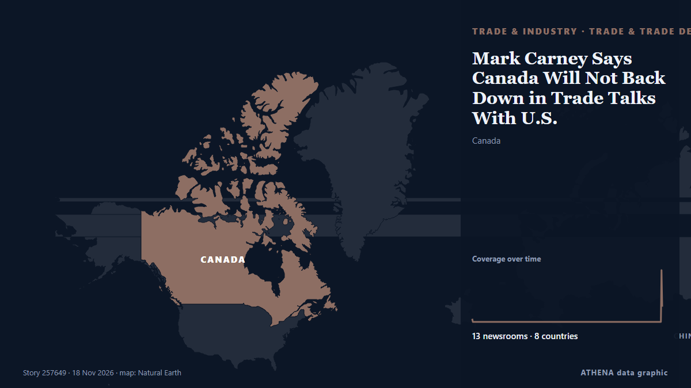

Mark Carney Says Canada Will Not Back Down in Trade Talks With U.S.

Conversely, the prime minister of Canada said that talks with China were “going exceptionally well.” από New York Times Business
Αναφέρθηκε ανεξάρτητα από 13 μέσα σε 8 χώρες από τις 5 Μαΐ, πρώτο το CBC News (alternative feed)· η κάλυψη εξασθενεί. Το ATHENA εκτιμά τον κίνδυνο μέτριο (2.5/10), κυρίως λόγω της σοβαρότητάς του και της εμβέλειάς του. Βεβαιότητα 87% (υψηλή): το επιβεβαιώνουν 13 ανεξάρτητα μέσα, μέση αξιοπιστία 73%. Μέσα ανά χώρα: Καναδάς (10), Ηνωμένες Πολιτείες (6), Ινδία (2). Κάλυψη: 5 Μαΐ έως 18 Νοε, 13494 ώρες.
Γιατί έχει σημασία: Οι διαταραχές στο εμπόριο, τη βιομηχανία ή τις υποδομές διαδίδονται στις αλυσίδες εφοδιασμού και αλλάζουν κόστη και χρόνους παράδοσης μακριά.
Τι άλλαξε: 16 νέες αναφορές από 11 μέσα στο 24ωρο έως 18 Νοε.
Πρώτη διατύπωση: Ecuadorian politicians warn about legal provisions in free trade deal
ΑυτοματοποιημένοΕπιλέχθηκε, ομαδοποιήθηκε και βαθμολογήθηκε με τη δημοσιευμένη μέθοδο της ATHENA από 15 ανεξάρτητα μέσα. Ο τίτλος είναι του μέσου· οι προτάσεις της ATHENA ακολουθούν σταθερά πρότυπα - δεν τις γράφει παραγωγική ΤΝ. Πώς λειτουργεί →
Πώς να διαβάσετε αυτή τη σελίδα
- Τι διαβάζετε
- 13 μέσα σε 8 χώρες ανέφεραν αυτό το γεγονός. Οι αναφορές παρακάτω εμφανίζονται με τη σειρά που δημοσιεύτηκαν· κάθε τίτλος ανοίγει το αρχικό άρθρο. Το ATHENA δεν γράφει δικά του ρεπορτάζ.
- Η εκτίμησή μας
- Υπό παρακολούθηση — Οι αναφορές περιγράφουν ενέργεια ή απόφαση που δεν έχει ακόμη ληφθεί, ανάμεσα σε κράτη ή ένοπλες ομάδες. Το ATHENA παρακολουθεί τι θα συμβεί στη συνέχεια. Αναζητούμε τέσσερα είδη εξέλιξης: καμία περαιτέρω ενέργεια, μια ανοιχτή ενέργεια που κάποιος αναλαμβάνει, μια ενέργεια μέσω τρίτων ή χωρίς ανάληψη ευθύνης, και ένα ατύχημα ή μια παρεξήγηση. Δεν προβλέπουμε ποιο θα συμβεί.
- Πόσα στοιχεία υπάρχουν
- Επαρκής Αρκετά ανεξάρτητα μέσα συμφωνούν, αλλά η εικόνα μπορεί ακόμη να αλλάξει.
Αφού αφαιρεθούν οι επαναλήψεις, τα άσχετα και τα παλιά στοιχεία, υπολογίζονται 13 από τις 23 αναφορές που παρατίθενται· το 91% των τίτλων αντιστοιχεί στο γεγονός.
- Τι δεν σημαίνει
- Το ATHENA μετρά πώς καλύπτεται ένα γεγονός, όχι αν είναι αληθές. Δεν είναι πρόβλεψη, κρίση για το ποιος έχει δίκιο ή συμβουλή.
- Τι θα την άλλαζε
- Αναφορές από άλλα ανεξάρτητα μέσα που δείχνουν διαφορετική εξέλιξη, ή σαφής επιβεβαίωση ή διάψευση από επίσημη πηγή.
Εκτίμηση R2 · ανανεώνεται με κάθε ενημέρωση της σελίδας. Το ATHENA δεν έχει δημοσιεύσει ακόμη ιστορικό επιδόσεων για αυτές τις εκτιμήσεις· όταν το κάνει, θα συνδέεται εδώ.
Με μια ματιά
Επιλέγεται, βαθμολογείται και γράφεται από τη δημοσιευμένη μεθοδολογία του ATHENA. Κανένας συντάκτης δεν παρεμβαίνει σε μεμονωμένα γεγονότα. Πώς παράγεται ›
| 05 May 15:35 UTC | 1 |
|---|---|
| 07 May 15:35 UTC | 0 |
| 09 May 15:35 UTC | 0 |
| 11 May 15:35 UTC | 0 |
| 13 May 15:35 UTC | 0 |
| 15 May 15:35 UTC | 0 |
| 17 May 15:35 UTC | 0 |
| 19 May 15:35 UTC | 0 |
| 21 May 15:35 UTC | 0 |
| 23 May 15:35 UTC | 0 |
| 25 May 15:35 UTC | 0 |
| 27 May 15:35 UTC | 0 |
| 29 May 15:35 UTC | 0 |
| 31 May 15:35 UTC | 0 |
| 02 Jun 15:35 UTC | 0 |
| 04 Jun 15:35 UTC | 0 |
| 06 Jun 15:35 UTC | 0 |
| 08 Jun 15:35 UTC | 0 |
| 10 Jun 15:35 UTC | 0 |
| 12 Jun 15:35 UTC | 0 |
| 14 Jun 15:35 UTC | 0 |
| 16 Jun 15:35 UTC | 0 |
| 18 Jun 15:35 UTC | 0 |
| 20 Jun 15:35 UTC | 0 |
| 22 Jun 15:35 UTC | 0 |
| 24 Jun 15:35 UTC | 0 |
| 26 Jun 15:35 UTC | 0 |
| 28 Jun 15:35 UTC | 0 |
| 30 Jun 15:35 UTC | 0 |
| 02 Jul 15:35 UTC | 0 |
| 04 Jul 15:35 UTC | 0 |
| 06 Jul 15:35 UTC | 0 |
| 08 Jul 15:35 UTC | 0 |
| 10 Jul 15:35 UTC | 0 |
| 12 Jul 15:35 UTC | 0 |
| 14 Jul 15:35 UTC | 0 |
| 16 Jul 15:35 UTC | 0 |
| 18 Jul 15:35 UTC | 0 |
| 20 Jul 15:35 UTC | 0 |
| 22 Jul 15:35 UTC | 0 |
| 24 Jul 15:35 UTC | 0 |
| 26 Jul 15:35 UTC | 0 |
| 28 Jul 15:35 UTC | 0 |
| 30 Jul 15:35 UTC | 0 |
| 01 Aug 15:35 UTC | 0 |
| 03 Aug 15:35 UTC | 0 |
| 05 Aug 15:35 UTC | 0 |
| 07 Aug 15:35 UTC | 0 |
| 09 Aug 15:35 UTC | 0 |
| 11 Aug 15:35 UTC | 0 |
| 13 Aug 15:35 UTC | 0 |
| 15 Aug 15:35 UTC | 0 |
| 17 Aug 15:35 UTC | 0 |
| 19 Aug 15:35 UTC | 0 |
| 21 Aug 15:35 UTC | 0 |
| 23 Aug 15:35 UTC | 0 |
| 25 Aug 15:35 UTC | 0 |
| 27 Aug 15:35 UTC | 0 |
| 29 Aug 15:35 UTC | 0 |
| 31 Aug 15:35 UTC | 0 |
| 02 Sep 15:35 UTC | 0 |
| 04 Sep 15:35 UTC | 0 |
| 06 Sep 15:35 UTC | 0 |
| 08 Sep 15:35 UTC | 0 |
| 10 Sep 15:35 UTC | 0 |
| 12 Sep 15:35 UTC | 0 |
| 14 Sep 15:35 UTC | 0 |
| 16 Sep 15:35 UTC | 0 |
| 18 Sep 15:35 UTC | 0 |
| 20 Sep 15:35 UTC | 0 |
| 22 Sep 15:35 UTC | 0 |
| 24 Sep 15:35 UTC | 0 |
| 26 Sep 15:35 UTC | 0 |
| 28 Sep 15:35 UTC | 0 |
| 30 Sep 15:35 UTC | 0 |
| 02 Oct 15:35 UTC | 0 |
| 04 Oct 15:35 UTC | 0 |
| 06 Oct 15:35 UTC | 0 |
| 08 Oct 15:35 UTC | 0 |
| 10 Oct 15:35 UTC | 0 |
| 12 Oct 15:35 UTC | 0 |
| 14 Oct 15:35 UTC | 0 |
| 16 Oct 15:35 UTC | 0 |
| 18 Oct 15:35 UTC | 0 |
| 20 Oct 15:35 UTC | 0 |
| 22 Oct 15:35 UTC | 0 |
| 24 Oct 15:35 UTC | 0 |
| 26 Oct 15:35 UTC | 0 |
| 28 Oct 15:35 UTC | 0 |
| 30 Oct 15:35 UTC | 0 |
| 01 Nov 15:35 UTC | 0 |
| 03 Nov 15:35 UTC | 0 |
| 05 Nov 15:35 UTC | 0 |
| 07 Nov 15:35 UTC | 0 |
| 09 Nov 15:35 UTC | 0 |
| 11 Nov 15:35 UTC | 0 |
| 13 Nov 15:35 UTC | 0 |
| 15 Nov 15:35 UTC | 0 |
| 17 Nov 15:35 UTC | 0 |
| 19 Nov 15:35 UTC | 0 |
| 21 Nov 15:35 UTC | 0 |
| 23 Nov 15:35 UTC | 0 |
| 25 Nov 15:35 UTC | 0 |
| 27 Nov 15:35 UTC | 0 |
| 29 Nov 15:35 UTC | 0 |
| 01 Dec 15:35 UTC | 0 |
| 03 Dec 15:35 UTC | 0 |
| 05 Dec 15:35 UTC | 0 |
| 07 Dec 15:35 UTC | 0 |
| 09 Dec 15:35 UTC | 0 |
| 11 Dec 15:35 UTC | 0 |
| 13 Dec 15:35 UTC | 0 |
| 15 Dec 15:35 UTC | 0 |
| 17 Dec 15:35 UTC | 0 |
| 19 Dec 15:35 UTC | 0 |
| 21 Dec 15:35 UTC | 0 |
| 23 Dec 15:35 UTC | 0 |
| 25 Dec 15:35 UTC | 0 |
| 27 Dec 15:35 UTC | 0 |
| 29 Dec 15:35 UTC | 0 |
| 31 Dec 15:35 UTC | 0 |
| 02 Jan 15:35 UTC | 0 |
| 04 Jan 15:35 UTC | 0 |
| 06 Jan 15:35 UTC | 0 |
| 08 Jan 15:35 UTC | 0 |
| 10 Jan 15:35 UTC | 0 |
| 12 Jan 15:35 UTC | 0 |
| 14 Jan 15:35 UTC | 0 |
| 16 Jan 15:35 UTC | 0 |
| 18 Jan 15:35 UTC | 0 |
| 20 Jan 15:35 UTC | 0 |
| 22 Jan 15:35 UTC | 0 |
| 24 Jan 15:35 UTC | 0 |
| 26 Jan 15:35 UTC | 0 |
| 28 Jan 15:35 UTC | 0 |
| 30 Jan 15:35 UTC | 0 |
| 01 Feb 15:35 UTC | 0 |
| 03 Feb 15:35 UTC | 0 |
| 05 Feb 15:35 UTC | 0 |
| 07 Feb 15:35 UTC | 0 |
| 09 Feb 15:35 UTC | 0 |
| 11 Feb 15:35 UTC | 0 |
| 13 Feb 15:35 UTC | 0 |
| 15 Feb 15:35 UTC | 0 |
| 17 Feb 15:35 UTC | 0 |
| 19 Feb 15:35 UTC | 0 |
| 21 Feb 15:35 UTC | 0 |
| 23 Feb 15:35 UTC | 0 |
| 25 Feb 15:35 UTC | 0 |
| 27 Feb 15:35 UTC | 0 |
| 01 Mar 15:35 UTC | 0 |
| 03 Mar 15:35 UTC | 0 |
| 05 Mar 15:35 UTC | 0 |
| 07 Mar 15:35 UTC | 0 |
| 09 Mar 15:35 UTC | 0 |
| 11 Mar 15:35 UTC | 0 |
| 13 Mar 15:35 UTC | 0 |
| 15 Mar 15:35 UTC | 0 |
| 17 Mar 15:35 UTC | 0 |
| 19 Mar 15:35 UTC | 0 |
| 21 Mar 15:35 UTC | 0 |
| 23 Mar 15:35 UTC | 0 |
| 25 Mar 15:35 UTC | 0 |
| 27 Mar 15:35 UTC | 0 |
| 29 Mar 15:35 UTC | 0 |
| 31 Mar 15:35 UTC | 0 |
| 02 Apr 15:35 UTC | 0 |
| 04 Apr 15:35 UTC | 0 |
| 06 Apr 15:35 UTC | 0 |
| 08 Apr 15:35 UTC | 0 |
| 10 Apr 15:35 UTC | 0 |
| 12 Apr 15:35 UTC | 0 |
| 14 Apr 15:35 UTC | 0 |
| 16 Apr 15:35 UTC | 0 |
| 18 Apr 15:35 UTC | 0 |
| 20 Apr 15:35 UTC | 0 |
| 22 Apr 15:35 UTC | 0 |
| 24 Apr 15:35 UTC | 0 |
| 26 Apr 15:35 UTC | 0 |
| 28 Apr 15:35 UTC | 0 |
| 30 Apr 15:35 UTC | 0 |
| 02 May 15:35 UTC | 0 |
| 04 May 15:35 UTC | 0 |
| 06 May 15:35 UTC | 0 |
| 08 May 15:35 UTC | 0 |
| 10 May 15:35 UTC | 0 |
| 12 May 15:35 UTC | 0 |
| 14 May 15:35 UTC | 0 |
| 16 May 15:35 UTC | 0 |
| 18 May 15:35 UTC | 0 |
| 20 May 15:35 UTC | 0 |
| 22 May 15:35 UTC | 0 |
| 24 May 15:35 UTC | 0 |
| 26 May 15:35 UTC | 0 |
| 28 May 15:35 UTC | 0 |
| 30 May 15:35 UTC | 0 |
| 01 Jun 15:35 UTC | 0 |
| 03 Jun 15:35 UTC | 0 |
| 05 Jun 15:35 UTC | 0 |
| 07 Jun 15:35 UTC | 0 |
| 09 Jun 15:35 UTC | 0 |
| 11 Jun 15:35 UTC | 0 |
| 13 Jun 15:35 UTC | 0 |
| 15 Jun 15:35 UTC | 0 |
| 17 Jun 15:35 UTC | 0 |
| 19 Jun 15:35 UTC | 0 |
| 21 Jun 15:35 UTC | 0 |
| 23 Jun 15:35 UTC | 0 |
| 25 Jun 15:35 UTC | 0 |
| 27 Jun 15:35 UTC | 0 |
| 29 Jun 15:35 UTC | 0 |
| 01 Jul 15:35 UTC | 0 |
| 03 Jul 15:35 UTC | 0 |
| 05 Jul 15:35 UTC | 0 |
| 07 Jul 15:35 UTC | 0 |
| 09 Jul 15:35 UTC | 0 |
| 11 Jul 15:35 UTC | 0 |
| 13 Jul 15:35 UTC | 0 |
| 15 Jul 15:35 UTC | 0 |
| 17 Jul 15:35 UTC | 0 |
| 19 Jul 15:35 UTC | 0 |
| 21 Jul 15:35 UTC | 0 |
| 23 Jul 15:35 UTC | 0 |
| 25 Jul 15:35 UTC | 0 |
| 27 Jul 15:35 UTC | 0 |
| 29 Jul 15:35 UTC | 0 |
| 31 Jul 15:35 UTC | 0 |
| 02 Aug 15:35 UTC | 0 |
| 04 Aug 15:35 UTC | 0 |
| 06 Aug 15:35 UTC | 0 |
| 08 Aug 15:35 UTC | 0 |
| 10 Aug 15:35 UTC | 0 |
| 12 Aug 15:35 UTC | 0 |
| 14 Aug 15:35 UTC | 0 |
| 16 Aug 15:35 UTC | 0 |
| 18 Aug 15:35 UTC | 0 |
| 20 Aug 15:35 UTC | 0 |
| 22 Aug 15:35 UTC | 0 |
| 24 Aug 15:35 UTC | 0 |
| 26 Aug 15:35 UTC | 0 |
| 28 Aug 15:35 UTC | 0 |
| 30 Aug 15:35 UTC | 0 |
| 01 Sep 15:35 UTC | 0 |
| 03 Sep 15:35 UTC | 0 |
| 05 Sep 15:35 UTC | 0 |
| 07 Sep 15:35 UTC | 0 |
| 09 Sep 15:35 UTC | 0 |
| 11 Sep 15:35 UTC | 0 |
| 13 Sep 15:35 UTC | 0 |
| 15 Sep 15:35 UTC | 0 |
| 17 Sep 15:35 UTC | 0 |
| 19 Sep 15:35 UTC | 0 |
| 21 Sep 15:35 UTC | 0 |
| 23 Sep 15:35 UTC | 0 |
| 25 Sep 15:35 UTC | 0 |
| 27 Sep 15:35 UTC | 0 |
| 29 Sep 15:35 UTC | 0 |
| 01 Oct 15:35 UTC | 0 |
| 03 Oct 15:35 UTC | 0 |
| 05 Oct 15:35 UTC | 0 |
| 07 Oct 15:35 UTC | 0 |
| 09 Oct 15:35 UTC | 0 |
| 11 Oct 15:35 UTC | 0 |
| 13 Oct 15:35 UTC | 0 |
| 15 Oct 15:35 UTC | 0 |
| 17 Oct 15:35 UTC | 0 |
| 19 Oct 15:35 UTC | 0 |
| 21 Oct 15:35 UTC | 0 |
| 23 Oct 15:35 UTC | 0 |
| 25 Oct 15:35 UTC | 0 |
| 27 Oct 15:35 UTC | 0 |
| 29 Oct 15:35 UTC | 0 |
| 31 Oct 15:35 UTC | 0 |
| 02 Nov 15:35 UTC | 0 |
| 04 Nov 15:35 UTC | 0 |
| 06 Nov 15:35 UTC | 0 |
| 08 Nov 15:35 UTC | 0 |
| 10 Nov 15:35 UTC | 0 |
| 12 Nov 15:35 UTC | 0 |
| 14 Nov 15:35 UTC | 0 |
| 16 Nov 15:35 UTC | 17 |
| 18 Nov 15:35 UTC | 5 |
| 18 Nov 16:10 UTC | 3.0 |
|---|---|
| 18 Nov 18:45 UTC | 1.9 |
| 18 Nov 19:01 UTC | 3.0 |
| 18 Nov 21:56 UTC | 2.5 |
Γιατί αυτοί οι αριθμοί
Σημασία
Κίνδυνος
Βεβαιότητα
Η κάλυψη — ποιος το ανέφερε και πότε
ο τίτλος όπως δημοσιεύτηκε · ανοίγει το πρωτότυπο- CBC News (alternative feed) · Καναδάς'If the U.S. doesn't want to do a deal, we're busy,' Carney says of ongoing trade talks
- NDTV · ΙνδίαEU Envoy Highlights Northeast's Role In Trade Pact During Assam Visit
- The Canadian Press (via CityNews) · ΚαναδάςEcuadorian politicians warn about legal provisions in free trade deal
- Atlantic Council · Ηνωμένες ΠολιτείεςCongress could soon rein in Trump’s tariffs on Canada. Here’s what that could look like.
- The New York Times (World) · Ηνωμένες ΠολιτείεςCarney and Xi Announce Canada-China Trade Pact
- Express Tribune · ΠακιστάνRs1.34-per-unit tariff hike likely
- Above the Law · Ηνωμένες ΠολιτείεςJudge Orders Trump Administration To Produce The Biglaw Deals And The Emails Behind Them
- The Canadian Press (via CityNews) · ΚαναδάςCanada, India on the cusp of finalizing free trade deal, says high envoy
- CBC News (alternative feed) · ΚαναδάςTrade talks between top Canada, U.S. officials ramping up: sources
- The Globe and Mail · ΚαναδάςCanada, India close to finalizing free trade deal, envoy says
- The Straits Times · ΣιγκαπούρηAfter years on ice, Canada seeks trade-based reset with China: Minister
- The Canadian Press (via CityNews) · ΚαναδάςCarney meets Trump in China, says Canada’s U.S. trade ‘much more complex’ than China
- CBC News · ΚαναδάςOddly enough, this video game weighs in on Canada's fighter jet options
- The Canadian Press (via CityNews) · ΚαναδάςCarney says Canada’s growing trade ties with China are not a top concern for Trump
- RTÉ News · ΙρλανδίαEU agrees new trade deal with Indonesia
- Le Monde (English) · ΓαλλίαCanada speeds up the thaw in its relationship with China
- The Globe and Mail · ΚαναδάςU.S. trade talks 'more complex' than China's, Carney says
- The Canadian Press (via CityNews) · ΚαναδάςCarney says he hopes to sign trade arrangement deal with Taiwan soon
- TRT World · ΤουρκίαTrump, Carney explore path to trade deal amid tariff tensions
- The Hindu · ΙνδίαIndia, Canada eye defence pact during Modi visit in December
- The New York Times (World) · Ηνωμένες ΠολιτείεςCarney and Trump Hold Unscheduled Trade Meeting at Asia Summit
- New York Times Business · Ηνωμένες ΠολιτείεςWatch: Canada’s Prime Minister on Negotiating With President Trump
- New York Times Business · Ηνωμένες ΠολιτείεςMark Carney Says Canada Will Not Back Down in Trade Talks With U.S.